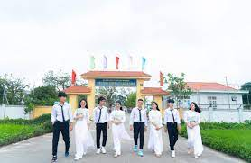

Những Thành Tựu Của Nhà Trường
Hiện tại Nhà trường có 28 lớp, gồm 1122 học sinh. Tổng cán bộ, giáo viên, nhân viên của trường là 63 người, tất cả cán bộ, giáo viên, nhân viên đều đạt chuẩn và trên chuẩn trong đó có 35 cán bộ, giáo viên có trình độ thạc sỹ chiếm 56%. Chất lượng dạy học của giáo viên được học sinh và cha mẹ học sinh tin tưởng. Qua đánh giá hàng năm, 100% giáo viên của trường đều đạt trình độ chuyên môn khá và giỏi, nhiều giáo viên đạt chiến sĩ thi đua cấp cơ sở, Giáo viên dạy giỏi. Tiêu biểu Cô Nguyễn Thị Tùng Diệp đạt giải nhất cuộc thi cuộc thi giáo viên dạy giỏi cấp Thành Phố năm 2014, Cô Nguyễn Thị Tùng Diệp đạt giải nhất, nhì ba trong cuộc thi thiết kế bài giảng E-learning năm 2014, cô Nguyễn Thị Lan đồng giải ba cùng cô Nguyễn Thị Tùng Diệp trong cuộc thi Thiết kế bài giảng E-learning 2014, Thầy Nguyễn Thế Sang đạt giải trong cuộc thi Kĩ năng Công nghệ thông tin cấp thành phố năm 2015. Phía học sinh hàng năm nhiều học sinh đỗ vào các trường Đại học, cao đẳng, có những em đỗ với số điểm cao (26,5/30 điểm), có em đạt thành tích cao trong học tập tiêu biểu em Nguyễn Thị Khánh Ly đạt giải nhì trong cuộc thi chọn học sinh giỏi cấp Thành phố và được chọn vào vòng thi chọn đội tuyển Quốc gia năm 2009; Em Nguyễn Quốc Hải và em Trần Thành Lộc đạt giải ba cấp Thành phố trong cuộc thi Khoa học kĩ thuật cấp thành phố năm 2018. Tất cả giáo viên của trường đều có khả năng ứng dụng CNTT vào trong dạy học. Học sinh ngày càng tiến bộ về cả ý thức và kết quả học tập, nhiều học sinh rất chăm học và sáng tạo. Có nhiều tấm gương người tốt việc tốt như nhặt được của rơi trả người đánh mất, được người dân đến trường gửi lời cảm ơn. Nhà trường nhiều năm đạt trường tiên tiến, số học sinh đỗ Đại học ngày càng tăng.Một Số Hình Ảnh Của Trường
.jpg)
